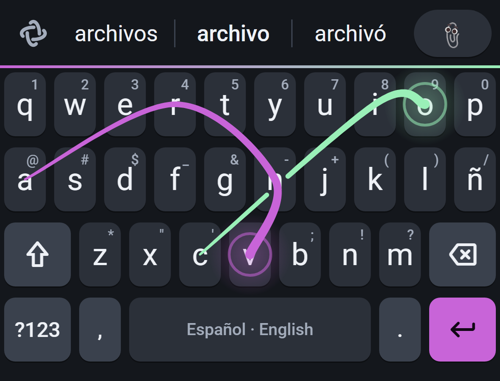

Swipe with both thumbs at once, with one, tap, or mix them in the same word, in English and Spanish without switching. It learns your words and keeps them on your phone: Braid has no internet permission.
Desliza con los dos pulgares a la vez, con uno, toca o mezcla en la misma palabra, en español e inglés sin cambiar de idioma. Aprende tus palabras y las guarda en tu teléfono: Braid no tiene permiso de internet.
Download for AndroidDescargar para Android
of real two-thumb swipes read right on the first guess; 99% in the top three.
de deslizamientos reales con dos pulgares, acertados a la primera; 99% entre las tres primeras.
to read a swipe (median). The word is there as your thumbs lift.
para leer un deslizamiento (mediana). La palabra está ahí al levantar los pulgares.
languages in one: English and Spanish together, no switching.
idiomas en uno: español e inglés juntos, sin cambiar.
bytes sent. No internet permission, so your words can't leave your phone.
bytes enviados. Sin permiso de internet, tus palabras no salen de tu teléfono.
In the largest study of phone typing, people typing with two thumbs averaged 30% more words a minute than people typing with one finger. Braid reads both thumbs at once, so you can split a word between them, swipe one half and tap the other, or keep one thumb if that's how you type.
En el estudio más grande sobre escritura en el teléfono, quienes escriben con dos pulgares hicieron en promedio 30% más palabras por minuto que quienes escriben con un dedo. Braid lee los dos pulgares a la vez: reparte una palabra entre ellos, desliza una mitad y toca la otra, o sigue con un pulgar si así escribes.
Each thumb sweeps its half of the word at the same time. Mix taps and swipes in one word: Braid reads it all as one.
Cada pulgar recorre su mitad de la palabra al mismo tiempo. Mezcla toques y deslizamientos en una palabra: Braid lo lee todo junto.
Names, slang, your brand: type a new word a few times and it's yours to swipe. It also learns which words you use together.
Nombres, jerga, tu marca: escribe una palabra nueva unas veces y ya la puedes deslizar. También aprende qué palabras usas juntas.
One keyboard for both. Write "nos vemos at the meeting" without touching a language button.
Un solo teclado para los dos. Escribe "see you en la reunión" sin tocar un botón de idioma.
Slide left from delete and the selection follows your thumb, a letter at a time. Go far and it runs through whole words. Lift to erase, one undo to bring it back.
Desliza a la izquierda desde borrar y la selección sigue tu pulgar, letra por letra. Ve lejos y avanza por palabras enteras. Levanta para borrar; un deshacer lo devuelve.
Slide on space to move the cursor and slide from shift to select text. No more poking at tiny handles.
Desliza en el espacio para mover el cursor y desliza desde mayúsculas para seleccionar. Se acabó pelear con los marcadores.
Recent clips and the texts you save in one place, searchable. Give a saved text a shortcut, like @@ for your email.
Lo que copiaste y los textos que guardas, en un solo lugar y con búsqueda. Dale un atajo a un texto guardado, como @@ para tu correo.
13 themes, glide trails, key-press effects like Explosion, Ripple and Confetti, key motion and haptics that feel your swipe.
13 temas, estelas al deslizar, efectos al tocar como Explosión, Onda y Confeti, movimiento de teclas y vibración que sigue tu trazo.
Stats show how fast you type in each style and how much faster swiping is for you. Take the typing test, share your card.
Las estadísticas muestran qué tan rápido escribes en cada estilo y cuánto más rápido es deslizar para ti. Haz la prueba de escritura y comparte tu tarjeta.
No internet permission, no account, no cloud backup of what you type. Incognito with one tap for anything sensitive.
Sin permiso de internet, sin cuenta, sin copias en la nube de lo que escribes. Incógnito con un toque para lo delicado.
93% comes from replaying 234 real two-thumb swipes from our tester's phone through the current engine; 1 ms is the median time to read a swipe on a phone build. We haven't timed Braid against other keyboards yet, so we don't claim to beat them. Once we have, the numbers go here.
El 93% sale de repetir 234 deslizamientos reales con dos pulgares, del teléfono de nuestro probador, con el motor actual; 1 ms es la mediana para leer un deslizamiento en un teléfono. Aún no hemos medido a Braid contra otros teclados, así que no decimos que les gane. Cuando lo hagamos, los números van aquí.
Updating? Install over your current Braid; it keeps the words it learned.¿Actualizando? Instala encima de tu Braid actual; conserva las palabras que aprendió.